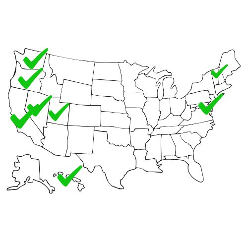

Vote-by-mail ballots in their envolpoes. Especialy since the COVID-19 pandemic, voting by mail has increased in every state. Photo courtsey of Michael Sheehan on Creative Commons.
President Donald Trump issued an executive order in March instructing his administration to ramp up enforcement of federal election laws, with a focus on mail-in voting. The order criticized practices that allow ballots to be counted after Election Day or without postmarks, calling them threats to election integrity.
“Many American elections now feature mass voting by mail, with many officials accepting ballots without postmarks or those received well after Election Day,” the order read.
The order also noted that other countries like Denmark and Sweden “sensibly limit mail-in voting to those unable to vote in person and do not count late-arriving votes.”
In the most recent 2024 election, all 50 states and Washington D.C., allowed voting-by-mail in some form. Eight states and Washington, D.C., automatically send mail-in ballots to all active registered voters in the 2024 general election.
States that automatically mailed ballots to all registered voters in the 2024 election. Those staes are California, Colorado, Hawaii, Nevada, Oregon, Utah, Vermont, Washington, as well as Washington, D.C.
In 2018, even before the COVID-19 pandemic, when the vote-by-mail option became increasingly common, three states were already conducting all vote-by-mail elections. Those states were Colorado, Oregon and Washington.
Oregon, which leads the way in all vote-by-mail elections, claims their system allows for the most turnout and maintains security.
“Oregon has the most convenient voting system in the country,” the Oregon secretary of state’s website reads. “Since adopting vote-by-mail, Oregon consistently ranks as a national leader in voter turnout and security.”
Twenty-eight states plus Washington D.C., had mail ballots available for all. And in 19 other states, voters require an excuse like illness, travel, or age to receive a mail-in ballot.
By the 2020 election, with the COVID-19 pandemic in effect, nine states and Washington D.C. conducted all mail-in voting.

A United States Postal Service collection box receptacle outside of the STAMP student union at the University og Maryland. By Isaac Shiner.
Trump’s executive order claims that states are in violation of federal law by counting ballots that arrive by mail after Election Day.
“The United States has not adequately enforced federal election requirements that, for example, prohibit states from counting ballots received after Election Day or prohibit non-citizens from registering to vote,” the order says.
In 2024, 17 states and Washington D.C., allowed for mail-in ballots to still be received and counted past Election Day. Washington State even allowed ballots to arrive and be counted as late as Nov. 27. The election was on Nov. 5.

States in blue require mail-in ballots to be received by Election Day. States in gray allow ballots to be counted if they arrive after Election Day.
The executive order also goes as far as to direct his administration “to cease providing federal funds to states that do not comply with the federal laws.”
Wendy Weiser, the vice president for democracy at the Brennan Center for Justice at NYU Law School, was critical of the executive order.
“This violates the Constitution and various federal laws,” Weiser said. “If implemented, the order could disenfranchise millions of American citizens, compromise the security of sensitive personal data and disrupt election administration across the country.”
Several states have sued the federal government over this order, though the lawsuits have mainly focused on the constitutionality of the president requiring states to require voters to show identification and proof of citizenship to register to vote and vote.